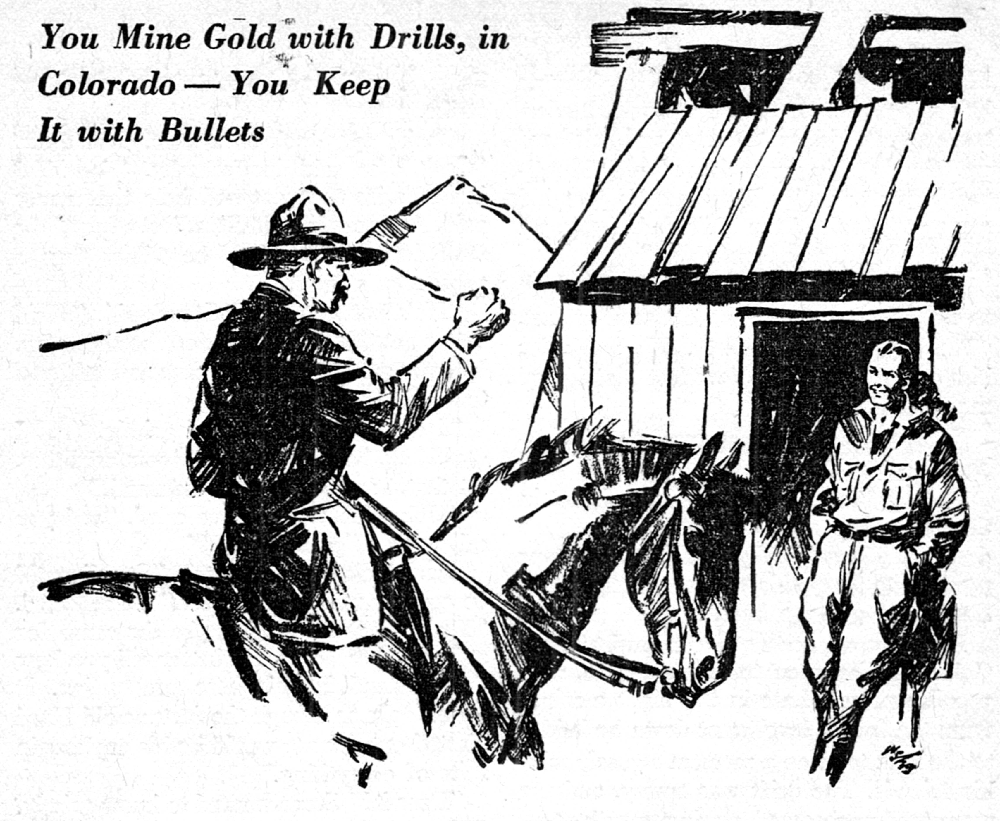
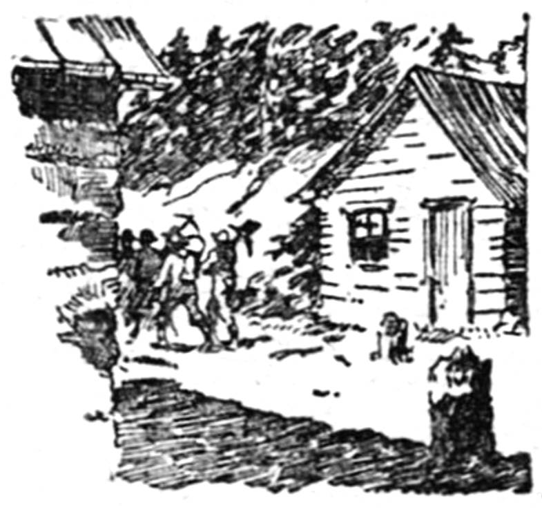
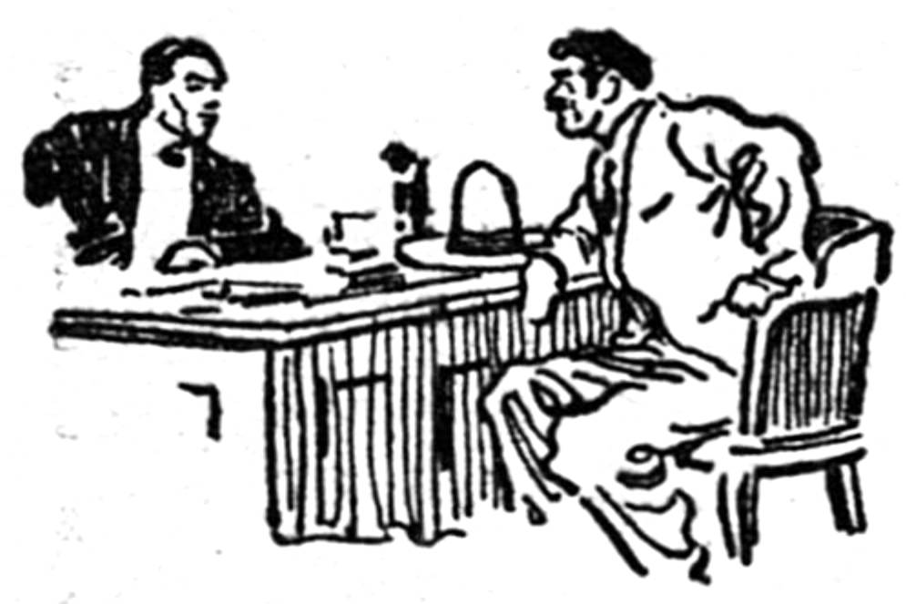
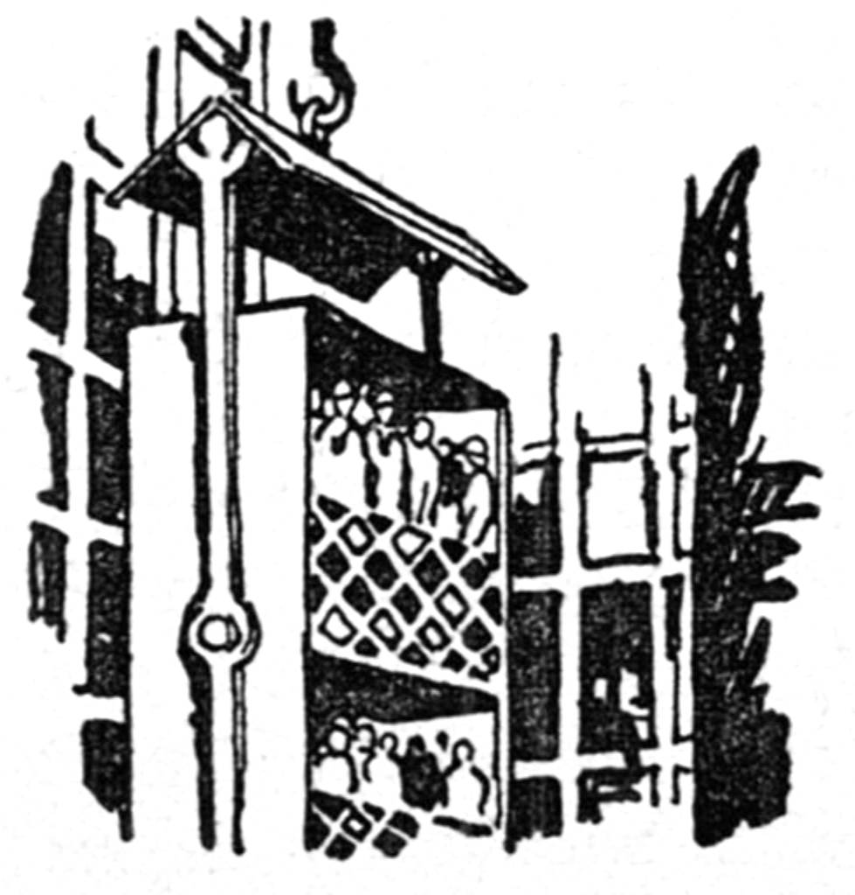
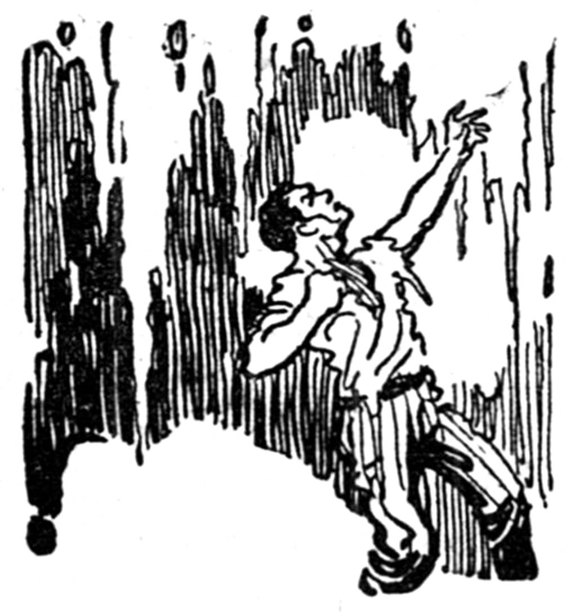

For more than fifteen years the Elkhorn mine yielded a steady output of low grade gold ore sufficient to make “Hard” Sturdivant one of the richest operators in the State of Colorado. Then late one afternoon the day shift on the fifth level, five hundred feet below the surface of the earth, set an unusually heavy blast. It splintered a three-foot plate of blue quartz, tore holes in seven feet of talc, and when the men came back into the drift they faced the breast of a tunnel that gleamed and sparkled with pure gold.
The day shift stared aghast. The foreman swore. Then, suddenly a miner laughed.
“That’s hot,” he said. “Look at it—and that gold ain’t on Elkhorn property at all. We’ve reached the boundary. That fortune ain’t Hard Sturdivant’s, it’s Clark Henderson’s.”
There was a moment of impressive silence. The foreman leaned against the drift wall.
“It’s true,” he said in hushed tones, “and old Hard hates them Hendersons worse than the devil hates good holy water.”
The foreman strode to the main shaft and yanked the bell rope signaling for the mine superintendent. Gaffney came down on the next cage.
“See here,” the superintendent said a bit unsteadily, “we can’t let this be known, men. I’ll have to swear you all to secrecy until I notify Sturdivant. He’s down at Denver.”
One of the miners spat reflectively. “Gaffney,” he said, “we all know Sturdivant’s rock-hard and a mean-bitten devil. He’s been a bully and a thief as long as he’s mined these mountains. Clark Henderson’s a good kid. He’s decent and he’s hard up. Surest thing you know, old Sturdivant’ll try to pull a dirty one on that kid same as he ruined the kid’s dad. I say, we ought to tell Clark Henderson.”
Gaffney looked them over. “We’ve got to notify Hard first,” he declared at last. “That’s just plain honesty. We work for him and this is still a few feet his side of the property line.”
“Maybe,” the foreman muttered. “Maybe, a foot or two.”
Gaffney said: “Clark Henderson’s not in the camp. His mine’s not operating. He’s down at Colorado Springs. I want your promise to keep this strike a secret until Sturdivant gets up here.”
But news of such a strike is hard to keep. Gold that lies open to men’s eyes has its peculiar power. Late in the night a miner from the fourth level went down by ladder to the fifth to swap a moment’s gossip with his friends. The drift was empty, and the man stood unobserved, staring, mouth open, at the millions gleaming yellow and flashing back the light of the oil lamp hanging to his hat.
By morning the story was whispered everywhere throughout the mine. Men at the boarding house across the hollow heard about the rich gold strike, and they waited eagerly to go to work.
Among them was Steve Conley. Steve was engineer on the night shift, and, though nobody knew it, he was a close friend of young Clark Henderson’s. He phoned to Clark at once. Young Henderson was in the camp three hours before Sturdivant. He was a tall, broad-shouldered mountaineer with steel-blue eyes and a fighter’s square, strong chin.
Steve Conley met him. Steve was short and stocky with swarthy features and black hair. He was also born to fight a good fight.
“You’re rich,” Steve told Clark excitedly—“richer than hell’s soup, man.”
Clark eyed the engineer coolly. “Thanks for the fairy story,” he drawled. “I own a dud mine that dad left me and I got lots of debts.”
“Yeah?” Steve triumphed. “Well you listen....” And he told the story of the strike.
Clark’s eyes took on a keen, clear glow. “Gosh,” he said ineffectually, “dad died busted with that damned hole that never paid. And to think old Sturdivant found the stuff for me. Say, he’ll be wilder than a prospector’s burro.”
“He’s not here yet,” Steve said. “We’d better get things going before he shows up. Did you get hold of some cash as I told you to do?”
“I did,” Clark answered grimly. “All I could beg, borrow and steal from creditors. At that, it’s a scant two thousand.”
“Holy mackerel,” Steve cried, “and you call yourself poor, buddy!”
Clark looked at his watch. “Sturdivant’ll be coming up from Denver,” he reflected. “That means he won’t make the camp for at least three hours. I’d better tell you how things stand in this here proposition. It about looks as though the fortune old Hard blasted out for me would be his anyhow in spite of everything.”
“Does it?” Steve wanted to know grimly. “How come that?”
Clark told him.
The Henderson mine was called the Summit. Ten years earlier Clark’s father had mortgaged it in order to get funds with which to sink the mine shaft still deeper. He had believed there was gold there, but he had never found it. Sturdivant had been his enemy from the old wild days when they had fought each other openly for mine rights. The mortgages on the Summit were to run ten years.
“They’ve got a month to go,” Clark finished, “and I learned today that Sturdivant just bought them from their original owners. In just a month he’ll own the Summit legally.”
“I know. But Jumpin’ Jude,” Steve argued, “one shipment of yellow stuff like that we opened down at level five and you can buy the Elkhorn, let alone pay mortgages on the old Henderson shaft!”
“The point is,” Clark said, “how to get the shipment?”
The Summit engines, boilers and other machinery had stood idle so long that the task of reopening the old Henderson mine was a stupendous one. To get it into operation would take days of twenty-four hour driving, working three full shifts of men. The knowledge that in one month old Hard would foreclose staggered them.
“Anyhow,” Clark said, “if Hard Sturdivant gets that gold, he’ll find it the most expensive wealth he ever dug out of Globe Mountain. We start our little war today.”
“I’m your army,” Steve declared.
“In half an hour,” Clark said, “the four o’clock shift will go on at the Elkhorn. How many of those muckers do you think we could hire to walk out this afternoon and open work for me?”
“Steal Sturdivant’s men?” Steve grinned delightedly. “Why say, they hate his guts. What’s more, they all saw that gold on the fifth. They know you can deliver when you promise double pay. Most of ’em’d be glad to see old Hard get walloped.”
“Then you go get ’em,” Clark said. “I’ll meet them at the Summit fast as you send ’em up the hill.”
“And, boy, will old Hard roar his powder down?” Steve laughed, and then left young Henderson, swinging across the hollow toward the boarding house.
Clark Henderson climbed the shoulder of Globe Mountain by the old road his father had helped grade so long ago. Up there, the Summit shaft house rose bleak and desolate against the sky. Could he win?
The shaft house was unlocked. Clark stood a moment in the door. The place was damp and cold. Rust coated the rails on the old tramway leading from the shaft out to the waste dump. To his left were the steep stairs that led up to the engine room. Would the machinery work at all? From the foot of those stairs a door opened at the side into the boiler room where stood the boilers, pumps, air compressor and where the drills were stored.
Clark went in to look at the boilers. Steam would be the first essential. The coal bins stood empty.
He was still pondering the situation when the first of Steve’s recruits arrived. They were careless of the consequences in this mad plan which they were entering. For them the game lay in sharing the struggle with young Henderson, whom they all liked. They had known his father.
“Looks pretty dead here,” Clark greeted them. “Reckon we can snap the old hole back to life?”
“Maybe,” one said. “If you’d a-seen that gold, young feller, you’d know she was alive all right.”
“First off, we’ll need coal,” Clark observed, “and far as I know, the closest supply is down at the Elkhorn. What say?”
“Can we get away with that coal?” The man who spoke was laughing openly. “Give me a sack and a drill to use in case that red-faced fireman down there needs a wrap.”
Ore sacks were found. Old buckets were discovered. These were mine buckets, two feet in diameter and as many deep.
“Work fast,” Clark said. “This is a case where time buys bacon.”
Sturdivant reached the Elkhorn mine soon after dark. He found it practically deserted. Up where the Summit had stood dark, silent, cold, so many years, he saw the gleam of many lights, the red flare of boilers under heavy fires, and his ear caught the steady throb of pumps, the sharp metallic ring of hammer upon steel where drills were being sharpened at the forges.
Sturdivant’s heavy jowls shook with rage. His narrow, mean eyes glittered. He drove his horse straight up the mountainside. At the Summit’s door he halted.

The great pipe, leading from the mine to a deep ditch outside, belched a stream of heavy yellow water. Up in the engine room, Steve Conley and a dozen men were overhauling the big double-drum hoist. The cables were badly rusted. Afraid to trust them, Steve had dispatched two men across Globe Mountain to comb the other mines for extra cable. Opposite the door in which Hard Sturdivant stood glaring, men were rigging up the cages. Tram cars were being put in shape. The forges glowed, and hammer clanged on anvil. Miners who had not sharpened steel for years were lustily turned blacksmiths. Clark Henderson met old Hard cheerfully.
“Excuse us, Hard,” he said, “if we don’t stop to serve tea, won’t you? Time’s precious just now.”
“You’re an impudent young thief,” Hard roared, and miners near enough to hear loitered with covert grins to listen in. “You stole my men. You stole my coal. I’ll make you pay for this.”
“I’m willing to pay for the coal,” Clark said. “I expect to pay the men.” He took a roll of bills from his pocket. “Coal at the market price plus haulage——”
Sturdivant choked and stamped his feet. “Keep your filthy money,” he thundered, “I’ll sell you nothing!”
“I think,” Clark murmured, “a debt is cancelled if the creditor refuses payment. I have the coal.”
“You’ll wish it was hell’s coal, and you was warmin’ in it before I get through with you,” old Hard bellowed.
“You know,” Clark said, “I seem to remember hearing my dad tell how you once confiscated coal and tools that belonged to the Hendersons. Thanks for the example, Hard.”
Hard Sturdivant turned away, only to whirl and snap, “The boarding house’ll be closed tonight.”
“I guess that’ll be just fine,” Clark told him. “I’ll have tents here and up by morning and I’ve hired Mrs. Flaven to handle my commissary tent. She’ll be out of your cookhouse before daylight.”
Sturdivant went back to his horse, swung to his saddle and, giving the animal a vicious cut with his rawhide, galloped away.
The main camp was over the brow of Globe Mountain, more than five miles from the mines. He wanted to reach the telegraph office, and he hated the distance that hindered him.
Two days were required to get the Summit mine cleared for real operations. They were days of incessant labor, and the men worked with a will that spoke more eloquently than their words, if not of their liking for Clark Henderson, certainly of their long dislike for old Hard Sturdivant. Those two days ate up money. On the third day, Clark found that over fifteen hundred of his nineteen hundred dollars was gone. He called the men together.
“I told you at the start that I was hard up,” he said. “It’s taken most of my ready cash to get us going. You know the layout underground. If we make it, we’re all set. If we don’t,” he paused, “I’ll likely owe you wages. I can keep you fed, though, until we have a try. If any of you feel that the chances are too great against us, I won’t blame him for pulling out; it’s a man’s place to look out for himself.”

The men gave him a cheer. In a way, they were out on a lark and they were enjoying it. After all, whatever the niceties of legal justice might be in this matter, the men felt that Clark was justified. All of them knew the story of how old Hard Sturdivant had fought his father, old man Henderson, to the break years earlier. All of them knew that Hard would never have let the news of the strike out until he owned the Summit. That was good business, maybe, but it wasn’t to their liking. They went to work to cut a drift from the bottom of the Summit through toward the gold strike.
Meanwhile, Hard Sturdivant was getting his forces moving. Within those two days he had gathered from the camp enough men to resume operations in the Elkhorn. Most of these were honest miners and Hard set them at honest mining.
None of them were asked to work on the fifth level. Three days later, however, fifty hard-featured city gunmen reached the camp and were conveyed at once to the Elkhorn. Hard quartered them in the boarding house. They were to high-grade the fifth level ore and haul it under guard to the smelters.
Clark Henderson called a meeting of his men.
“The presence of gangsters means that Sturdivant wants open fighting, men,” he said. “Gang warfare has always been Hard’s method of bullying his way in these mountains. It was with a gang of cutthroats that he finally broke my father. I don’t intend to let him break me that way, but if we can avoid it, I don’t want open war. That means hardship and bloodshed, and bitter memories. We’ve got some three weeks yet in which to win. I’m going to leave the mine to you. I’ll go to Colorado Springs and if need be, to Denver. I’ll see the banks and tell them how things are up here. If I can raise enough to pay the mortgages before they’re due, we’ll settle all this peacefully. It’s the best way; and I believe that I can get the money now. I’ve called you because I want your full support in everything that’s done. Does this plan suit you all?”
Among the miners were a few old heads who could remember when Clark’s father failed because of his unwillingness to take the right into his hands and settle it with violence. Did Clark imagine that Hard Sturdivant would leave a loophole for a peaceful triumph of his enemy? Yet, Clark was right. They knew this, and they wished him well. It was agreed that they would drive the tunnels, and that he did well to try to arrange a loan with the big bankers. Clark Henderson left the camp that night.
He was gone for eighteen days. During that trying interval he visited the mining bankers in three cities, and from them he learned how thoroughly Hard Sturdivant made war.
The Elkhorn was incorporated, and every banker of note held stock in it. Hard’s lawyers had been prompt to notify them that early the next month this stock would treble and quadruple in value. The Elkhorn, they were made to understand, had struck the richest vein discovered in the State for years. Its future only waited the fusion with the adjoining Summit property, and this would come when the mortgages in Sturdivant’s possession fell due.
Clark Henderson was received courteously, listened to with interest—and loans were declined him with regret. He returned to the Summit camp desperate, to face a struggle that was marked by a long sequence of accident and devilish disaster.
Two wagons hauling coal to the Summit mine unaccountably lost a rear wheel, and tons of coal were wasted. The Summit powder house, stocked with half a ton of dynamite, was blown up in the night.
Steve Conley, the engineer, reported these and other troubles.
“We’ve got a traitor among us, Clark, or a hireling of Sturdivant’s. Twice our pumps have been jammed and wasted a day for us each time. The air compressor was tampered with and we had to miss a shift before we could get it pumping air into the mine again.” His face was set. His eyes burned with repressed anger.
“Well, Steve, I failed completely. How about the tunnel? Will we make it?”
Steve did not answer him at once. The silence was more powerful than words, however. At last he shook his head.
“It’s hard quartz every foot of the way,” he said. “Working like a pack of devils, we can’t cut through that fast enough.”
Clark said, “We’ve got to. In just six days I have to get at least one shipment of that gold down to the smelter.”
Two days later, in spite of careful guards, the Summit shaft house burned. The only available water was that pumped from the mine, and there was no adequate equipment to make use of it. The big frame building had stood for years; dry, it burned like matchwood, and Clark Henderson’s men stood helpless watching it.
Clark drew Steve to one side. His face was white and set.
“Steve,” he asked, “will the men follow me, no matter what I do?”
“Most of them will,” Steve said, “the rest don’t count.”
“Then tell them to gather at the mess tent an hour after midnight,” Clark commanded. “We’ll get that shipment of gold out tonight. Have teamsters, and wagons ready below the Elkhorn tram.”
Promptly at a quarter after one o’clock a group of armed men made their way down the hill from the Summit to the coal chutes of Sturdivant’s mine, the Elkhorn, and stopped there, waiting for a signal. A similar group, under Steve Conley’s guidance, crouched and waited for the same signal below the northern windows to the engine room. Still a third body of miners moved well around the hill and, creeping up past the mine dump, stopped just outside the ore house doors.

Clark Henderson led the largest body directly toward the Elkhorn’s wide eastern shaft house doors. Inside, the tram man talked with half a dozen gangsters who lounged against a work bench. To all appearances these men were idling, but there was tension in their bearing. Hands hovered near their guns. From time to time they glanced expectantly into the night outside. Under the bluish-yellow light of the big oil lamps swinging from the shaft house beams their faces showed taut, concentrated, watchful. There were others who waited with the same strained caution in the engine room, the boiler room, and down in the ore house. They were expecting the attack.
Clark gave a shrill short whistle. Followed by his miners, he dashed upon the shaft house.
Simultaneously guns spoke at every point where his men waited. The night was shattered with the flash and roar. Down at the ore house three men with double sledges battered the doors while others waited close behind, guns ready.
Into the boiler room, through the coal chutes, poured the men from the Summit mine. They were received by Hard Sturdivant’s gunmen. Steve Conley and his followers hurled themselves through the north windows into the engine room. There was a fury of lead to greet them from gangsters hidden back of the big hoists.
Clark Henderson and his group were in the shaft house. A rain of bullets poured from their six-guns as they charged. Sturdivant’s gangsters answered with terrific fire.
And next instant the area around the yawning shaft was dense with smoke and full of fighting men. Ahead of him, across the open mine, Clark Henderson saw two gunmen. His revolver spoke. One of the two plunged forward. His body toppled and went down the shaft.
Bullets tore at Clark’s coat. His hat was riddled. He fired point-blank at the man opposite. The heavy lead took the gangster full in the stomach. He crumpled, coughing, by the shaft. From the left flank, where the tram doors were open, other Sturdivant gunmen poured a volley upon the attacking miners. Clark whirled to face their fire. A bullet ripped his sleeve and burned into his arm.
Around young Henderson men surged, fighting hand to hand now. A burly gangster rushed him. Braced for the shock, Clark hurled his empty gun in the man’s face. They met and locked. The gangster tried to lift him from his feet. They surged toward the open shaft. Men shouted and a mass of heaving striking bodies crashed into them.
Clark gripped the gangster’s throat, drove a knee upward, into the man’s stomach. They fell together.
Bullets tore the floor around them. The din was deafening. Smoke thickened the damp air. Someone yelled. Clark Henderson struck his man a short, straight blow that crashed the gangster’s head against the steel tram track. The body under Clark grew limp. He tore free and sprang to his feet.
From the windows separating shaft and engine room came Steve Conley’s exultant shout. “We’ve got the engines, Clark! I’m pulling up the cages. Get ready with your men to go below!”
Clark leaped to the shaft and waved his hat. Twenty of his picked crew gathered with him.
Around them there was still mass fighting. In the boiler room and down in the ore house the battle raged without pause, but the Summit men were everywhere in the majority and Clark Henderson had no misgivings as to the outcome. Meanwhile, down on the fifth level, Hard Sturdivant waited grimly with a picked group of gangsters. The cages whirled to the mine mouth and stopped. Clark and his followers leaped aboard. A signal flashed to Steve. The cages plunged abruptly downward.
The speed of that descent into the earth was like the fall of a plummet. The lamps on the men’s hats flared upward, the flames wavering, sputtering and all but dying. Then suddenly, the cages stopped. The men stepped into the drift and halted.
“Lights out,” Clark ordered. There was a faint sound as the miners’ lamps were snuffed out. Pitch darkness swooped upon them.
“Wait here,” Clark said. Then feeling with his foot for the narrow tram track, he followed it back through the drift.
Three quarters of the way along the drift there was a sump. This deep pit reached from wall to wall and was crossed by a tram bridge. It was designed to catch the water perpetually draining from the tunnel.
Clark Henderson moved ahead until he felt himself upon the bridge. There, he stood still to listen. There was no sound. No lights gleamed in the drift ahead.
“Listen, Sturdivant,” Clark called, “we’ve got you like rats in a trap. Will you surrender or must we blast you out?”
The roar of twenty guns tore the thick silence. The air was filled with smoke. Out of the darkness came a rain of lead. Bullets spattered around Clark Henderson, tore splinters from the supporting beams to right and left, chipped bits of rock from the drift overhead. A single volley set the mine alive with heavy echoes. Clark waited till the silence came.
Still no lights showed. Again, no sound was audible. Were the men there with Sturdivant waiting? Were they advancing?
In spite of the air pumps the tunnel was stifling hot and thick with foul air.
Clark moved a few steps forward, his hands out in the Stygian black. Lungs ached. Eyes burned. Ears strained.
Halfway across the bridge he halted. His fingers touched some object. Hands seized him. He gripped the unseen enemy. The two men stood, locked, motionless, upon a bridge not more than two feet wide. Then, swiftly, with simultaneous release of pent-up energy both men strained. They bent and swayed together.

Clark Henderson knew that he was fighting for his life, intuition told him the man he was struggling with was Hard Sturdivant. One slip, one false step, now, and he would plunge into that rock hole beneath, a well of heavy yellow water from which no living man could ever climb.
Clark could see nothing. His arms were locked about the body of his antagonist. Arms were locked about his waist. The two men strained and swayed. Their breathing was the only sound. This side, then that, they bent at the waist, feet gripping the narrow bridge beneath.
Clark threw his full weight forward. His right hand felt its steel-like way toward the unseen enemy’s throat, tense against his shoulder.
The other man drove a fist into Clark’s stomach. They parted slightly, then gripped again. This time, Clark bent low. His arms caught the thick limbs of Hard Sturdivant above the knees. He heaved up sharply. The man doubled, but his arms were fast around Clark. Together they crashed full length on the bridge.
In the swift twist of straining bodies there in the pitch black, each man felt for a sure hold. Together they writhed sideways.
Their heads were over the bridge now. With one hand Clark gripped the rail. With his knee he pushed against his enemy. But Sturdivant’s grip held. Then both men slipped, swung over the bridge side and hung there.
Clark was suspending himself by one hand. Hard Sturdivant was hanging to him. As Clark reached with the other hand to grip the rail, Hard made a heaving effort to pull himself up by Clark’s body. The strain was terrible. They swung and thrashed the thick air.
Above them, at either end of the sump, men gathered, listening. But the fighters had no breath to shout.
Using Clark’s body, Hard Sturdivant was pulling himself up to safety.
Clark felt beneath the bridge with his feet, searching for a crossbeam of the supporting truss. He found it. His foot lodged in the angle made by two beams. With this to help sustain his weight he let go of the rail with one hand, struck fiercely at Hard’s face, seized the throat of the Elkhorn’s owner and tore downward with all the strength he could command.
Hard Sturdivant choked and his hands gave. He uttered a shrill gasp; then swung out, and down into the yawning black pit below.
Men of both sides heard the yell; they swore with the tension of uncertainty.
Clark Henderson drew himself to the bridge. He was gasping for air and his arms ached, but he could not stop now. If either side made the mistake of flashing a single torch, there would be a hell of gunfire.
“Hard Sturdivant is dead,” Clark choked, still prostrate on the bridge. “For God’s sake, don’t you men go on murdering each other.”
There was a moment of awed silence. Clark raised himself and faced the gunmen.
“Listen, my men have dynamite,” he added. “One stick thrown into this drift will bury you all under tons of rock. Hard’s dead. What have you to gain now?”
There was a pause. The silence lay like lead upon them all. The heat was burning their fevered skins.
“All right,” a thick voice spoke from the drift head, “we won’t fire. Give us light.”
“Light!” Clark ordered, and a score of matches flickered. A score of lamps were lit. The groups at either end of the sump blinked like men suddenly shocked awake. They stared at Clark, then drew to the sump and looked down.
The yellow surface of that mud-thick water was like a hideous fester.
“Well,” one of Hard Sturdivant’s gunmen spoke, “I guess you win, young fella. We told old Hard not to tackle you that way, but he’d settled other scores like that over a sump. He ’lowed he could again. Here’s to you!”
“All right, men,” Clark said slowly, “we’ll get above ground now. We need fresh air.”
They moved to the two cages silently. Clark signaled. And as the cages started upward he spoke to himself.
“Well, dad—I guess we’ll mine Globe Mountain after all. Too bad we can’t be doing it together.”
The cages broke into the open air. Men stared to see who would step out of them and who be carried. The story was told swiftly. A silence followed, then Steve Conley spoke.
“Well, Clark,” he said, “you done a good job. Let’s get to minin’ gold.”
The miners burst into a cheer.
“We have to,” Clark said grinning; “I got a lot of bills to pay. Let’s dig!”